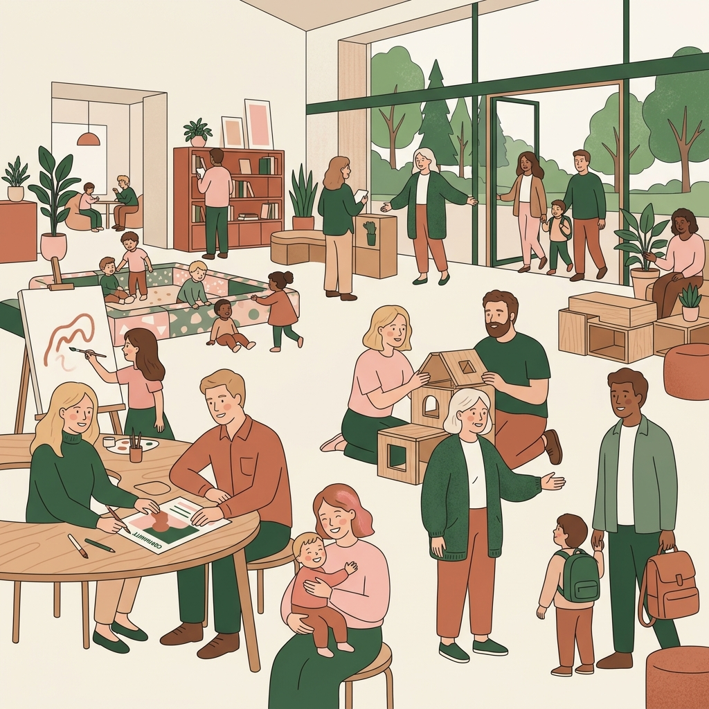

Für Einrichtungen & Kooperationspartner
Aus freien Räumen werden lebendige Orte für Familien im Stadtteil.
Für Kirchengemeinden, Familienbildungsstätten, Kitas, Hebammenpraxen und Nachbarschaftszentren in Frankfurt.
In jedem Frankfurter Stadtteil gibt es wertvolle Räume, die vormittags oder am Wochenende leer stehen – vom Gemeindesaal über den Kita-Mehrzweckraum und die Lehrküche bis zum Kursraum in der Hebammenpraxis.
Gleichzeitig suchen Familien im Viertel nach Orten für Begegnung, Austausch, alltagsnahe Workshops und sichere Kinderangebote.
Mainhattan Mamas bringt beides zusammen: Wir füllen Ihre Räume mit Leben, organisieren zeitgemäße Formate und schaffen lebendige Nachbarschaft im Quartier. Verlässlich, professionell geleitet und ohne personellen Mehraufwand für Ihr eigenes Team.
Unverbindliches Kennenlerngespräch vereinbaren
Wie eine Zusammenarbeit aussehen kann
Jeder Kooperationsort bringt eigene Stärken und Ressourcen mit. Wir passen das Format flexibel an Ihr Haus an:
1. Kirchengemeinden & Stadtteilzentren
Begegnung im Quartier
Wertvolle Ressource: Großzügige Gemeindesäle, helle Gruppenräume und zentrale Lage im Viertel.
Gemeinsame Formate: Offene generationenübergreifende Familientreffen, Spiel- & Geschichtenzeiten für Kleinkinder oder Krabbelgruppen.
Ihr Mehrwert: Neues Leben im Gemeindehaus, gelebter Generationendialog und eine spürbare Öffnung für junge Familien im Stadtteil.
2. Familienbildungsstätten
Praxis, Kochen & Workshops
Wertvolle Ressource: Etablierte Bildungsplattformen, Seminar-Ausstattung und Lehrküchen.
Gemeinsame Formate: Allergiebewusste Koch- und Backworkshops für unser Projekt „Kuchen für alle“, Themenabende rund um den Familienalltag oder Geburtsvorbereitungs-Circles.
Ihr Mehrwert: Attraktive, zeitgemäße Zusatzangebote für eine moderne Zielgruppe – konzipiert und moderiert durch Mainhattan Mamas.
3. Kindertagesstätten & Familienzentren
Entlastung im Alltag
Wertvolle Ressource: Vertrauter Ort für Eltern, Mehrzweckräume und direkte Nähe zu Familien.
Gemeinsame Formate: Begleitete Eltern-Sprechstunden, offene Elterncafés oder pädagogische Themenabende (z. B. zu Schlaf, Autonomiephase oder Eingewöhnung).
Ihr Mehrwert: Spürbare Entlastung des pädagogischen Teams bei zeitraubenden Tür-und-Angel-Gesprächen und handfeste Nachweise für Qualitätsberichte und Sozialraumöffnung (0 Stunden Mehraufwand für Ihr Kita-Team).
4. Hebammenpraxen & Gesundheitszentren
Raum & Entlastung bei Nicht-Medizinischem
Wertvolle Ressource: Geschützter, vertrauter Ort für Schwangerschaft, Geburt und Wochenbett.
Gemeinsame Formate:
- Geburtsgeschichten im geschützten Raum: Eine vertrauliche, moderierte Gesprächsrunde für Mütter, um das eigene Geburtserlebnis in einem sicheren Kreis zu teilen und zu verarbeiten.
- Der Schwangeren-Kompass: Durchblick im Bürokratie-Dschungel.
- Betreuungs-Kompass (U3): Krippe oder Tagesmutter?
- Schwangeren-Circle: Entspannte Treffen für werdende Mamas.
Ihr Mehrwert: Spürbare Entlastung für das Hebammenteam: Während Sie sich auf die körperliche und medizinische Begleitung konzentrieren, fängt Mainhattan Mamas emotionale Gesprächsbedarfe ab. Frauen werden direkt in eine tragfähige Nachbarschafts-Community eingebunden.
Verlässliche Aufgabenteilung im Überblick
| Bereich | Mainhattan Mamas e. V. | Ihre Einrichtung |
|---|---|---|
| Programm & Leitung | Vollständige Konzeption, Organisation, Moderation und Fachbegleitung | Öffnung der Tür für Menschen im Viertel |
| Kosten | Wir tragen Material-, Handout-, Verpflegungs- und Organisationskosten | 0 € Budgeteinsatz erforderlich |
| Räume | Schonende Nutzung, Begrüßung der Besucher, besenreine und pünktliche Übergabe | Bereitstellung eines geeigneten Raumes (stundenweise) |
| Haftung & Versicherung | Eigene Vereins-Haftpflichtversicherung und lückenlose Fachaufsicht vor Ort | Hausordnung und Schlüsselabsprache |
Lassen Sie uns sprechen.
Sie leiten eine Gemeinde, eine Familienbildungsstätte, eine Kita, eine Hebammenpraxis oder vertreten einen Träger in Frankfurt?
Lassen Sie uns in einem kurzen Gespräch schauen, welche Idee am besten zu Ihrem Haus passt.